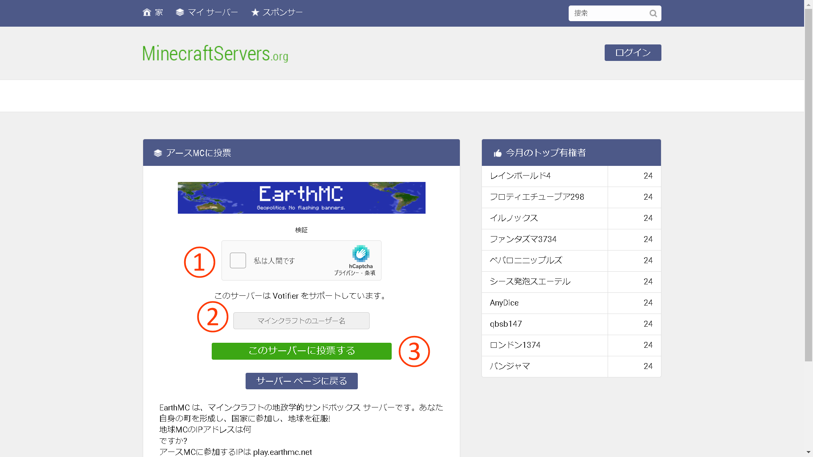
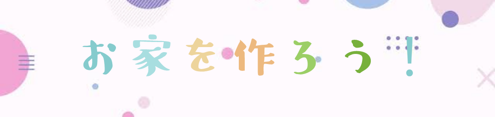
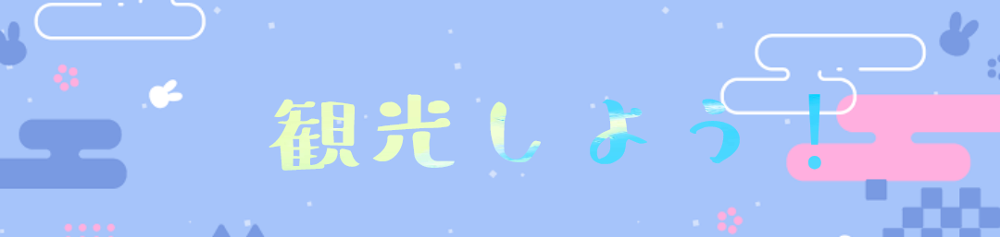
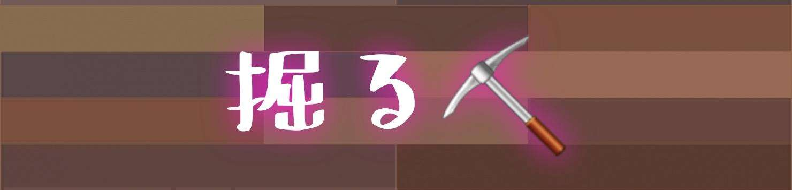
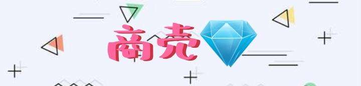
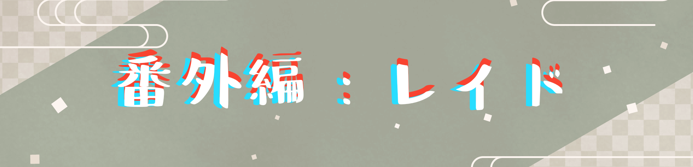
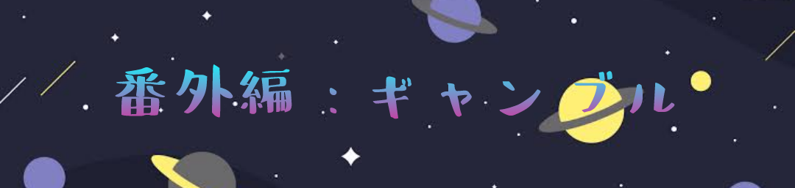
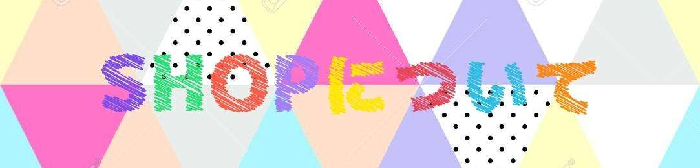
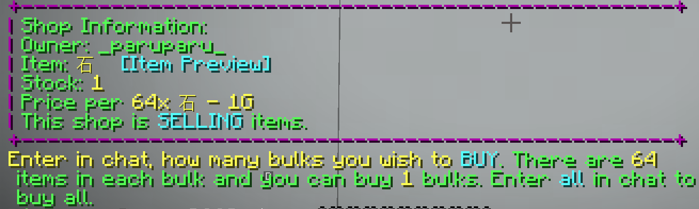

EMCへようこそ！
このサイトは、MinecraftのEarthMCサーバーで生活するための日本語チュートリアルです。
EMCでは、通貨として「金(Gold)」を使用し、「G」と表記します。
まずは「最初にすべきこと」から読み進めてください。
🔰 最初にすべきこと
① Vote(投票)をする
チャットで /vote と入力します。
表示されたURLをクリックして、投票サイトにアクセスします。
サイトで「私はロボットではありません」にチェックを入れ、自分のプレイヤー名を入力して投票します。1日2回までルーレット(クレート)が貰えます。
② 土地をもらう
町(国)に入ったら、市長に声をかけて自分の土地をもらいましょう。最初は自分の土地以外は触れません。
③ お家を作る
Voteなどで金がある程度集まったら、自分の拠点となる家を建てましょう。
④ 観光する
自分の町や、/n spawn [国名] コマンドで他の国を観光し、ショップや建築を見て回りましょう。
💰 お金(金)の集め方

① 掘る
最も基本的な金策です。領土外(荒野)で金を掘りますが、PK(プレイヤーキル)のリスクがあるため、透明ポーションの使用を推奨します。
⛏️ 金の掘り方(詳細)
必要な物:
- 効率V・耐久IIIのピッケルとシャベル
- 食料
- 透明ポーション(安全のため)
- 採掘IIポーション (Haste II potion)

掘り方:
- 領土外(荒野)に出ます。
- 透明ポーションを飲みます(PK対策)。
- 推奨高度(y12前後、またはy22)まで掘り進めます。
- 採掘ポーションを使い、効率よく掘ります(例: 横5マスx縦2マス)。

② 商売(ショップ経営)
自分でショップを開くか、MaliやYamatoなどの買取ショップにアイテムを売って稼ぎます。
③ PK(Player Kill)
他のプレイヤーを倒してアイテムを奪う方法です。PVPスキルが必要で、非常に危険度が高いです。
番外編
 - レイド (廃墟漁り): 42日間誰もログインしなかった町は廃墟(保護が解除)となり、アイテムが取り放題になります。
- ギャンブル: カジノで稼ぐ方法ですが、破産のリスクがあります。
- 会社: 整地会社などに入って給料をもらう方法もあります。
🏪 ショップの使い方
看板の見方

- 売ってる人の名前(売り切れの場合は赤色になります)
- Selling (販売) か Buying (買取) か
- 売っている物
- 価格(例: 64個の石を1Gで販売)

✅ アイテムの買い方
- 買いたいショップの看板(またはチェスト)を左クリックします。
- チャット欄に情報("Shop Information")が表示されます。 
- チャット欄に